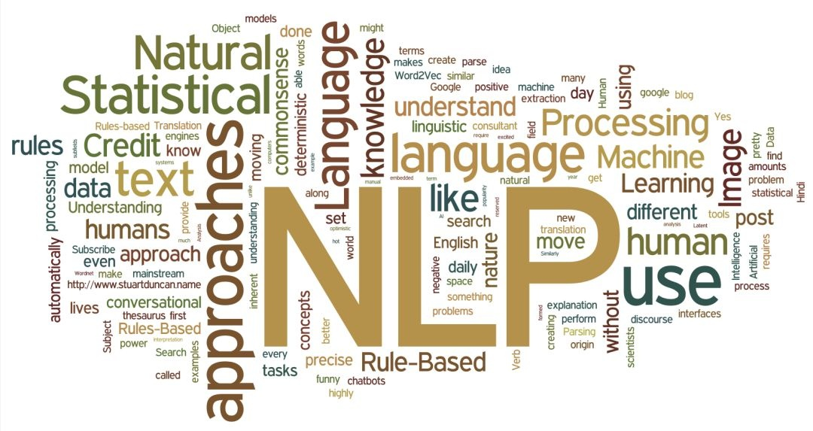

自然语言处理 Natural Language Processing
BDI • Fall 2025 • Shenzhen Technology University
自然语言处理(Natural Language Processing，NLP)属于人工智能的一个子领域，试图用计算机模拟人类语言，对自然语言的形、音、义等信息进行处理，即对字、词、句、篇章的输入、输出、识别、分析、理解、生成等进行操作和加工。它对计算机和人类的交互方式有许多重要的影响。 NLP 主要研究实现人与计算机之间用自然语言进行有效通信的各种理论和方法，是一门融语言学、计算机科学、数学于一体的科学。
在此课程中，我们将描述了自然语言处理中的基本任务，如句法、语义和话语分析，以及解决这些任务的方法。本课程侧重于使用神经网络的现代方法，并涵盖了因此所需的基本建模和学习算法。
本课程目标旨在：
- 使学生能够了解自然语言处理领域及其细分领域的概念以及处理对象与目标，
- 能够掌握自然语言处理领域中的经典算法与常用算法，
- 能够根据实际的自然语言处理问题选择合适的算法和工具，设计合理的算法处理流程，并根据实际效果优化算法参数和算法流程来获得更佳的处理效果，从而更有效的解决实际问题。

- Time:
- Location:
- Discussion:
- Homework submission:
- Contact: For external enquiries, personal matters, or in emergencies, you can email me directly.

- Instructor Haiqin Yang
- Email: yanghaiqin@sztu.edu.cn
- Office hours: Monday 1:00-2:00 pm
- Location: C1-1707